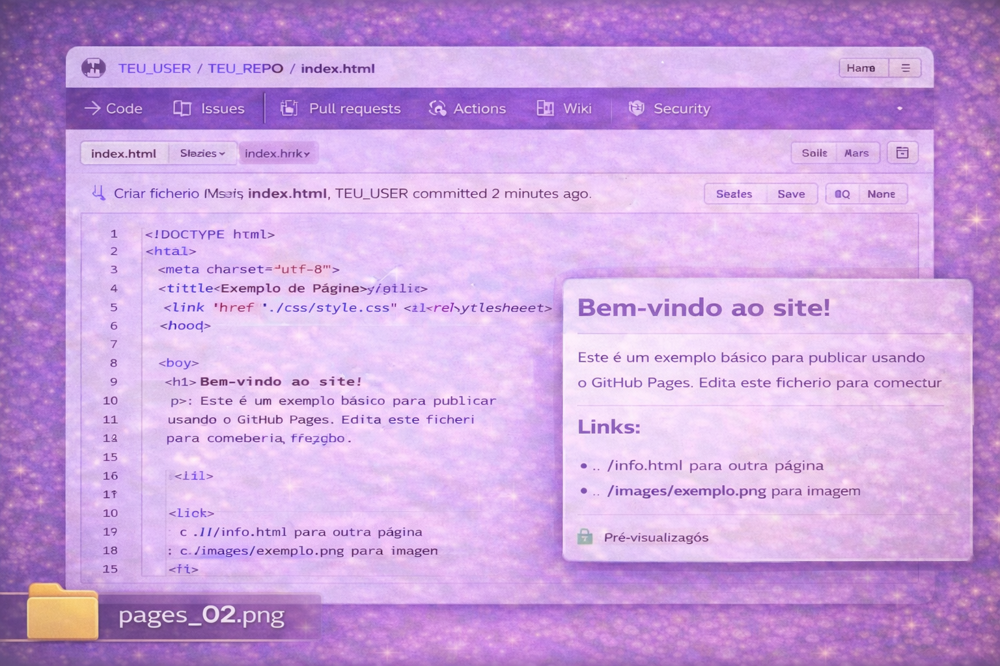
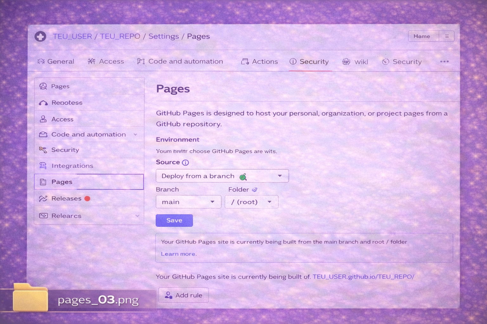
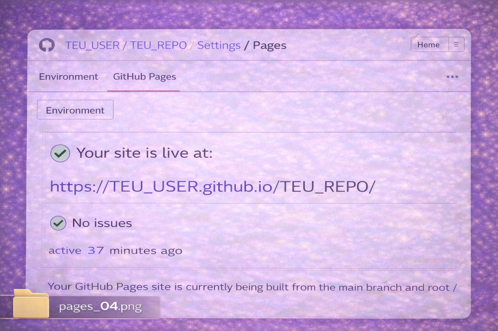
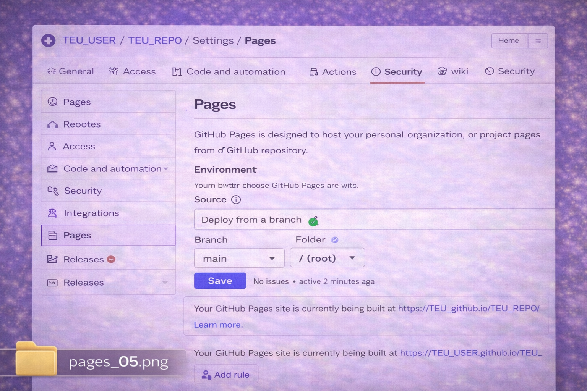
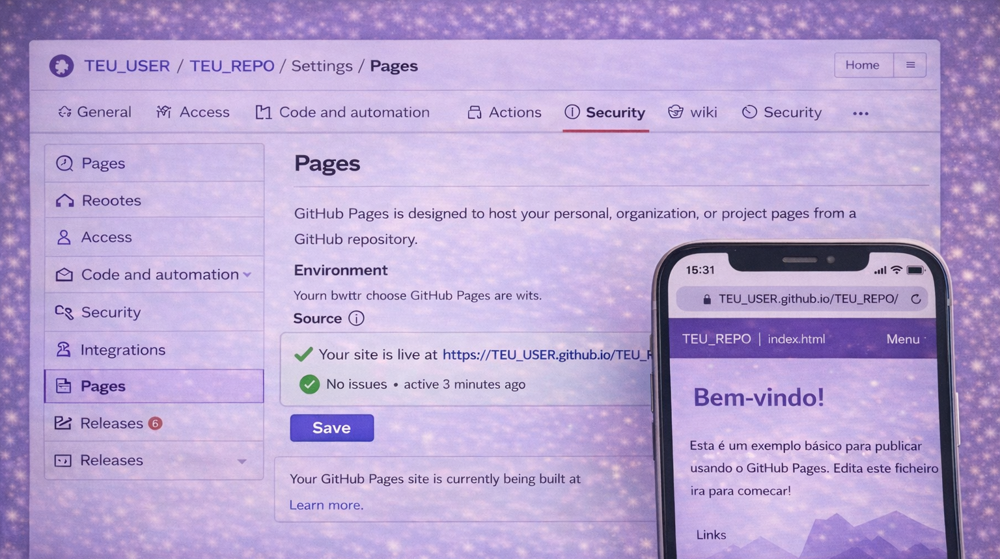
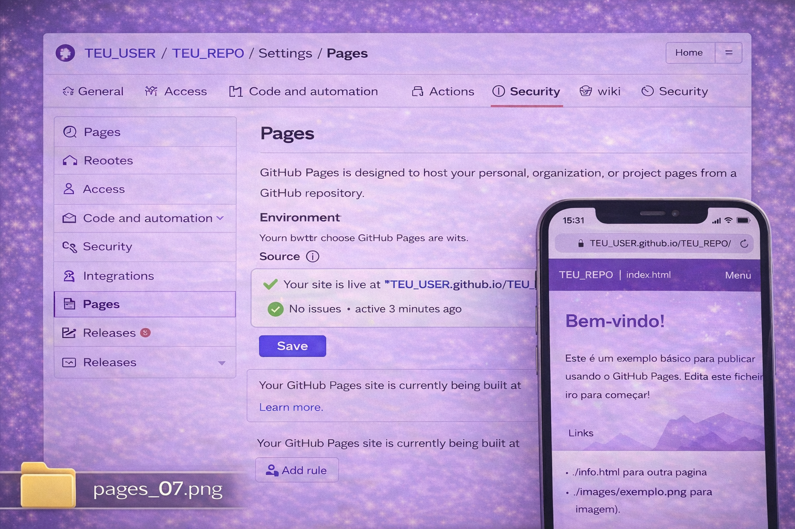
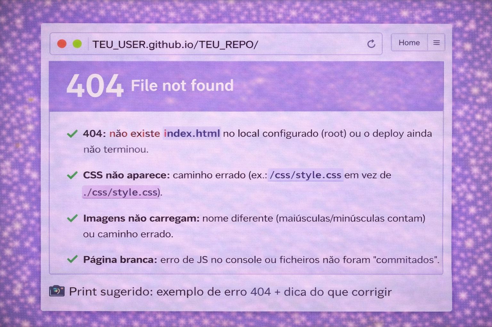

Se usares pastas, confirma links e imagens em todas as páginas.
Se o site não abrir logo, costuma ser apenas “deploy a processar” ou um caminho errado para CSS/imagens.
Passos essenciais
Configurar o Pages, aguardar o deploy e publicar o link no README.
1
Confirmar o index.html
O Pages vai abrir o index.html (normalmente na raiz do repositório).
Confirma que tens: /index.html (na raiz do repo).
Se não tiveres, cria um ficheiro simples e faz commit.
📸 Print sugerido: árvore do repositório com o index.html na raiz
📸 Print sugerido: abrir o index.html no GitHub (preview do ficheiro)

2
Ativar o GitHub Pages
Settings → Pages → escolher origem e branch.
No repositório:
Settings → Pages
Source: Deploy from a branch
Branch: main • Folder: /(root)
Carrega em Save
📸 Print sugerido: Settings → Pages com Source e Branch definidos

📸 Print sugerido: confirmação/estado do deploy (Pages a processar)

3
Abrir o link do site
O GitHub mostra o URL do Pages quando o deploy termina.
O link será parecido com:
https://TEU_USER.github.io/TEU_REPO/
Abre o link e confirma se carrega o site corretamente.
📸 Print sugerido: link do Pages visível na secção Pages

📸 Print sugerido: site a abrir no browser (primeira página)

4
Colocar o link no README
Ajuda na entrega e facilita o acesso ao professor/avaliador.
Exemplo para o README
## Site (GitHub Pages)
🔗 https://TEU_USER.github.io/TEU_REPO/
📸 Print sugerido: README com o link do Pages

5
Resolver problemas comuns (rápido)
Se algo falhar, normalmente é uma destas 4 razões.
404: não existe index.html no local configurado (root) ou o deploy ainda não terminou.
CSS não aparece: caminho errado (ex.: /css/style.css em vez de ./css/style.css).
Imagens não carregam: nome diferente (maiúsculas/minúsculas contam) ou caminho errado.
Página branca: erro de JS no console ou ficheiros não foram “commitados”.
📸 Print sugerido: exemplo de erro 404 + dica do que corrigir

📸 Print sugerido: exemplo de paths relativos corretos (HTML/CSS)
Próximo passo
Quando o repositório já estiver organizado, o passo seguinte é trabalhar com segurança:
branches para alterações e Pull Requests para integrar mudanças.